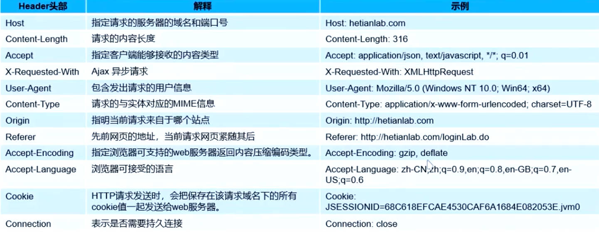
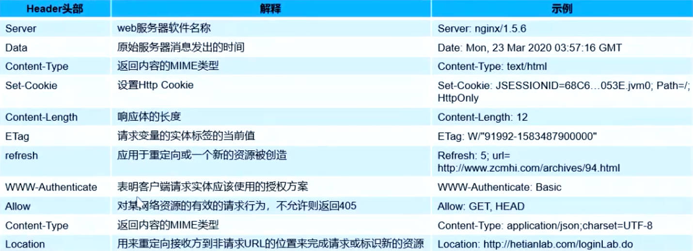

SEC-2022版-0000-http/https
http，https
http/URL/URI/URN
http连接流程/概念
连接流程：
客户端通过三次握手与服务器建立连接
TCP建立连接后， 向服务器发送http请求
服务器收到http请求后， 向客户端发送http响应
客户端通过tcp四次挥手， 与服务器断开tcp连接
可靠的链接交换信息
无状态的请求/响应协议
无状态协议阐释：
HTTP（超文本传输协议）是一种无状态的请求/响应协议，这意味着服务器不会维护客户端请求的任何状态信息。每个 HTTP 请求都被视为独立的请求，因此在处理一个新请求时，服务器不会考虑前面的请求或上下文。
拓展：两个架构
C/S 客户端-服务器 HTTP TCP/IP FTP
B/S 浏览器-服务器 HTTP HTML AJAX
http9.0/http1.0 每次连线请求/回应正确后关闭（完成一次关一次）
http1.1 保持连线，一个连接可以多个请求/回应 => 节约握手时间
URL-统一资源定位符
http:// user:pass @ www.example.jp: 80 /dir/index.htm ? uid=1 #ch1 |
URI与URN
URI : 统一资源标志符, URL<URI
URN ：统一资源名称，唯一名称或id标识资源。
客户端请求消息-数据包
http请求组成：（四部分）
请求行
请求头
空行
请求体
请求行
组成 :
Method 请求方法
Request-URL 统一资源标识符
HTTP-Version HTTP协议版本
CRLF 回车换行
| 请求方法 | 释义 |
|---|---|
| GET | 请求获取Request-URI所标识的资源 |
| POsT | 在Request-URI所标识的资源后附加新的数据 |
| HEAD | 请求获取由Request-URI所标识的资源的响应消息报头 |
| PUT | 请求服务器存储一个资源，并用Request-URI作为其标识 |
| DELETE | 请求服务器删除Request-URI所标识的资源 |
| TRACE | 请求服务器回送收到的请求信息，主要用于测试或诊断 |
| OPTIONS | 请求查询服务器的性能，或者查询与资源相关的选项和需求 |
| CONNECT | 保留将来使用，HTTP/1.1协议中预留给能够将连接改为管道方式的代理服务器 |
| PATCH | 用于将局部修改应用到资源· (由 RFC 5789 指定的方法) |
请求头

拓展：
X-Forwarded-For:<client>,<proxy1>,<proxy2>
- 代理，client是客户端地址，proxy是代理地址
- 作用：让服务端知道客户端请求的来源
空行
表示请求头结束，请求体开始。
请求体
通常情况下， post 传输的数据就在请求体当中，而 get 传输的数据在请求行当中。
且get是以 & 作为分隔。post也有使用 & 作为分隔。
服务器响应消息-数据包
http响应组成
- 状态行
- 消息报头
- 空行
- 响应正文
和请求最明显不一样的，是状态行，其他没什么大不同
状态行
协议版本 状态码 状态码描述
状态码
状态代码有三位数字组成，第一个数字定义了响应的类别·且有五种可能取值
1xx: 指示信息--请求已被服务器接收·继续处理
2xx: 成功--请求已成功被服务器接收、理解、并接受
3xx: 重定向--需要后续操作才能完成这一请求
4xx: 客户端错误--请求有语法错误或请求无法实现
5xx: 服务端错误--服务器在处理某个正确请求时发生错误
常见状态码
200 OK //客户端请求成功
400 Bad Request //客户端请求有语法错误，不能被服务器所理解
401 Unauthorized //请求未经授权，这个状态代码必须和WWW-Authenticate报头域一起使用
403 Forbidden //服务器收到请求，但是拒绝提供服务
404 Not Found //请求资源不存在，eg:输了错误的URL
500 Internal Server Error //服务器发生不可预期的错误
503 Server Unavailable //服务器当前不能处理客户端的请求，一段时间后可能恢复正常
头部消息

POST请求的几种Conten-Type
- application/x-www-form-urlencoded: 最常见的POST提交数据方式·浏览器支持的原生form表单
- multipart/form-data: 这种方式一般用来上传文件。
- application/json: 在响应头中很常见，在请求头中用来告诉服务端消息主体是序列化后的son字符串
boundary：较长，用于分隔不同的字段
+ –boundary开始
+ –boundary–结束
好紧迫的时间……
本博客所有文章除特别声明外，均采用 CC BY-NC-SA 4.0 许可协议。转载请注明来自 矢幽武博客！
 wechat
wechat alipay
alipay
相关推荐


评论
公告
双 手 合 十 成 为 自 己 的 神, 自 己 所 信 念 的 即 是 信 仰

微信号：暂时保密
QQ：暂时保密